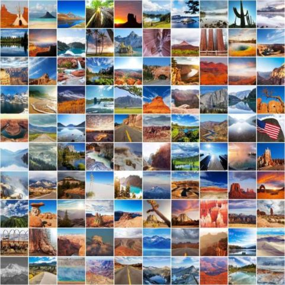

Unsplash
Miles de imágenes gratuitas de numerosos temas y en gran calidad. Muchas imágenes de este curso fueron utilizadas de ahí.

Existen miles de millones de imágenes en Internet, pero muchas de ellas no pueden ser utilizadas en nuestras páginas web porque estaríamos violando derechos de autor. Por ello, puede resultar difícil encontrar buenos recursos si no contamos con la capacidad de crear nuestras propias imágenes.
A continuación enlistamos algunos sitios web que nos pueden ayudar. Sus imágenes e íconos son de uso libre, lo cual significa que podemos utilizarlas en nuestras páginas web.
Haz clic en una tarjeta para traerla al frente.
Miles de imágenes gratuitas de numerosos temas y en gran calidad. Muchas imágenes de este curso fueron utilizadas de ahí.

Miles de íconos gratuitos en diversos formatos, incluyendo redes sociales y botones útiles para tus páginas.
Ilustraciones gratuitas de cientos de temas listas para utilizar en proyectos web.
Genera imágenes en línea a partir de descripciones escritas.
La legislación alrededor de este tipo de imágenes aún no está completamente definida, y es importante mantenerte informado sobre la evolución de las leyes de derechos de autor alrededor de estas herramientas si necesitas utilizarlas. En general, la mejor opción para evitar problemas legales es utilizar tus propios gráficos e imágenes para tus páginas web.